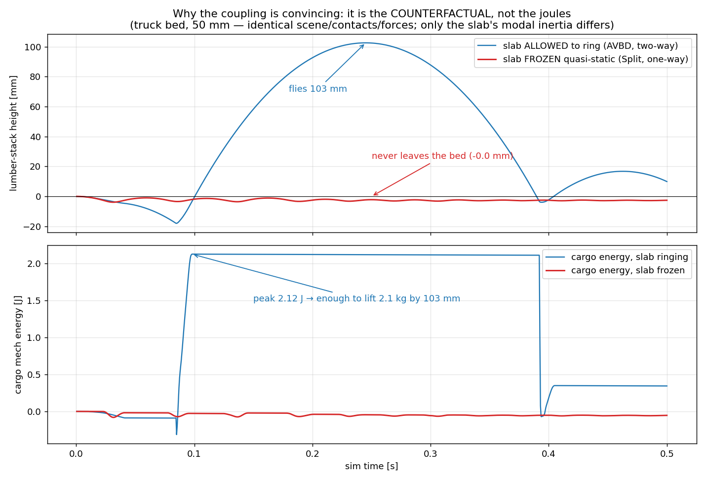
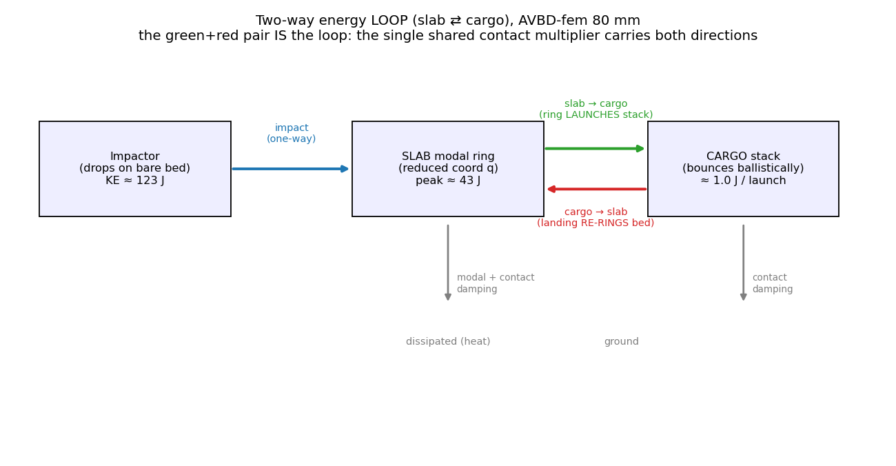

Promote the support's modal amplitude q into a dynamic degree of freedom solved jointly with the bodies — so contact loads the modes and the ringing modes push the bodies back. Two-way and passive by construction; no separate velocity band, no energy governor.
DCR follow-up · unified dynamic constraint (Approach B) · single backward-Euler solve over (z, q)
yrest+Uy·q — the full q (sag + ring), one curve
static-sag equilibrium — where it settles
dropped impactor — rings the support; bystanders get kicked through it
The earlier design split the support's deformation: the static sag qs went into the contact constraint, while the fast ring q̇d was evolved separately and injected as a capped, one-way velocity impulse. That seam is exactly why energy only flowed rigid → support and never looped back.
The fix is to stop splitting. Carry the full, dynamic modal state q as a second-order DOF — with its own inertia Mq, stiffness Kq, damping Dq — inside the same contact solve as the bodies. One backward-Euler step minimizes a single incremental potential over (z, q). The two-way loop is then structural, not injected: the contact force that lifts a cube is the very reaction that loads the mode, and the mode's inertia pushes back.
Deleted along the way: qs/qd split · drift-fix · separate IIR resonator for in-contact ring · velocity band · η / energy reservoir governor · high-pass / cooldown. The static sag is no longer special — it is just the equilibrium of the dynamic q under gravity.
z — the rigid bodies' state: position + orientation (and velocity v = [vlin; ω]). Ordinary rigid DOFs, one block of 6 per body.
q — the modal amplitudes ∈ ℝr: the support's deformation field compressed to r numbers (mass-normalized, so Mq=I, Kq=diag(ω²)). Now a dynamic DOF, with state (q, q̇) — not a passive output.
Both are advanced by the same implicit step. The contact is the only thing that couples them.
(z, q)The cube rests on the deformed surface, whose height is set by the full q:
Gradients: ∂g/∂z = Jx,j = [n̂; r×n̂] (body, from collision detection); ∂g/∂q = −Uy,j ≡ Jq,j (the mode shape sampled where the body touches). Uy,j is the single object that couples body and mode.
Unilateral, compressive-only: fj = clamp(ρ gj + λj, −∞, 0).
(z, q) the formulationEach substep minimizes a single incremental potential (backward Euler / AVBD augmented-Lagrangian). The only structural change from the static coupler is the highlighted modal-inertia term — that one term is what gives q a life of its own:
Inertial predictors (the modal one carries the ring's history q̇n — not zeroed, which is the whole point):
Hq gains two termsStationarity ∇E = 0 gives the same monolithic system you already assemble; the cross-block −ρ JxUyᵀ is unchanged. The static Hq=Kq+Σk UyUyᵀ simply gains an inertia and a damping term:
Schur-eliminate Δzi per body (each Hx,i is a dense 6×6), solve the resulting r×r system for Δq, back-substitute. After the step: q̇n+1 = (qn+1 − qn)/h. Computationally identical to the static coupler — the new terms are diagonal additions.
There is one multiplier fj per contact. It enters the two gradients with opposite signs through the same scalar:
That is Newton's third law. The force lifting the cube is exactly the reaction loading the mode — resolved to convergence each step. Because q now has inertia, when the mode springs back it raises the anchor and pushes the cube. The loop is built in.
Backward Euler on this potential is unconditionally dissipative: total mechanical energy is monotone non-increasing every step,
so the run can only converge to argmin E = the static sag. The old ΔEmodal ≤ η·ΔErigid loss reservoir is unnecessary — it was needed only because the split injected energy one-way. A momentum-conserving shared multiplier never injects.
| Two-band split qs + q̇d | Dynamic constraint full q | |
|---|---|---|
| modal state in solve | only static qs; q̇ held at 0 | full (q, q̇), inertia Mq/h² in the block |
| energy flow | one-way rigid → support (capped) | two-way loop, slosh then damp |
| ring back-reaction | explicit velocity impulse (event-driven) | structural — falls out of the shared fj |
| passivity | enforced by η / reservoir governor | free (backward Euler is dissipative) |
| tuning knobs | η, reservoir, window, high-pass, cooldown | none non-physical — only Mq,Kq,Dq (from modal analysis + material) |
| seams | qs/qd consistency (drift-fix) | none — single state |
The formulation's only new ingredient is the modal-inertia term Mq/h² — it is what turns q from a passive output into a dynamic DOF. To check that this single term is what produces the two-way loop, the truck-bed scene was run in the MultiBodySystem ground truth and in both position-based solvers (AVBD, XPBD), each against a one-way control (SplitOneWay) identical in every respect except it holds q̇ ≡ 0 — i.e. it deletes exactly that inertia term. Per-contact normal forces were logged for the whole run.
The decisive test is the counterfactual, not the joule count. Same scene, same contacts, same shared multiplier fj — the only difference is whether q carries inertia:

50 mm bed. With q dynamic (the constraint as written) the bystander lumber stack is launched 102.6 mm (peak cargo energy 2.12 J). With q̇ frozen the same stack lifts 0.0 mm (0.00 J). The cargo's entire motion is produced by the Mq/h² term — remove it and the coupling vanishes completely. That is what "two-way, in the form of the constraint" means, demonstrated.
| check | result |
|---|---|
the multiplier fj is the real slab→cube force | settled ⟨bed→base force⟩ = supported weight, ratio 1.00–1.05 (FEM & ABD cargo) — calibrated, not asserted |
two-way is the Mq term (counterfactual) | dynamic q: 103 mm / 2.12 J · frozen q̇≡0: 0.0 mm / 0.00 J |
| energy loop (XPBD, 80 mm) | impact charges slab 63 J → slab→cargo ≈1.3 J / launch → cargo→slab +1.7 J at each landing |
| back-reaction is real motion | 5 (AVBD) / 6 (XPBD) ballistic bounces, stack airborne ~80% of the run, lift matches ½gt² |
| scales with the support stiffness | dynamic delivers 10–65× the frozen-slab cargo KE; thicker bed → monotonically less (plate compliance ∝ 1/h³) |
| solver-independent | same loop in AVBD and XPBD; one shared fj carries both directions in each |
The loop with its measured transfers — one shared fj, both directions:

Consistent with the passivity argument above: energy sloshes slab ⇄ cargo then damps — the loop is real but lossy and asymmetric (≈1 J launched out of a 63 J ring per cycle), and never injected, exactly as a momentum-conserving shared multiplier should behave. This is the in-solver ground truth referenced below. Full data, per-contact CSVs, plots, and scripts: docs/twobody/contact_force_sweep/ (scripts/run_truck_bed_contact_force_sweep.py).
Numerical damping. Backward Euler removes energy even with Dq=0, and that extra damping on the ring is baked in — not separately tunable. For a controlled modal Q-factor use BDF2 / implicit midpoint, or substep finer. The ring decay you see is physical damping plus integrator damping.
Timescale / fidelity. At a typical substep h ∼ 1–4 ms, modes above ∼1/(2h) are over-damped / under-resolved. Low modes (visible sag & sway, <100 Hz) are faithful; a crisp kHz ring needs finer h or a hybrid that keeps an exact-exponential resonator for airborne intervals only.
Novelty. The physics here is classical flexible-multibody coupling (floating-frame + component-mode-synthesis; equivalently the affine-body / IPC family, but with modal rather than affine reduction). What is unestablished is realizing it as compliant constraints inside a real-time position-based rigid solver (XPBD / AVBD, GPU). This step is the in-solver ground truth; the cheaper, approximate, passivity-governed coupling is where the energy-bound contribution actually lives — validated against this.